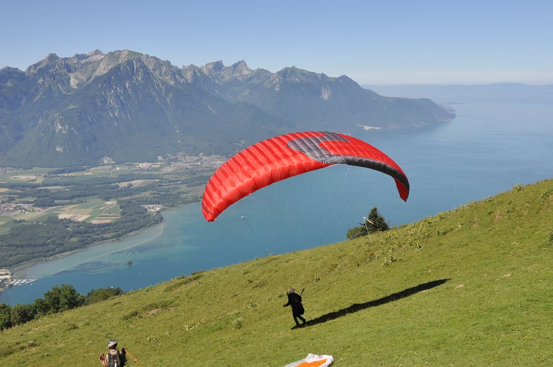

Когато се изкачиш на парапета чувстваш сърцето ти как бие интензивно,
усещаш го в гърдите и в гърлото. След което отброяването започва… 5… 4… 3 … 2… 1…
и усещаш как краката хвърлят тялото ти напред. Вятърът започва да се удря неистово
в лицето ти и настръхналата ти кожа.
Цена:70лв.

Полет с парапланер
Настанени в пилотската кабина ще наблюдавате и слушате всички процедури от излитането до кацането,
а ако имате желание при подходящи условия ще можете дори да поемете управлението на самолета.
С личен фотоапарат или малка видео камера може да запечатате това преживяване.
Цена: 70лв.
Скок с парашут
Невъзможно е да опишем чувствата, които ще ви връхлетят, затова накратко ще Ви запознаем, как протича тандемният скок с парашут.
- Кратък теоретичен инструктаж направен ви от вашия инструктор.
- Подготовка на екипировката - обличане на гащеризон и сбруя, предоставени от инструктора.